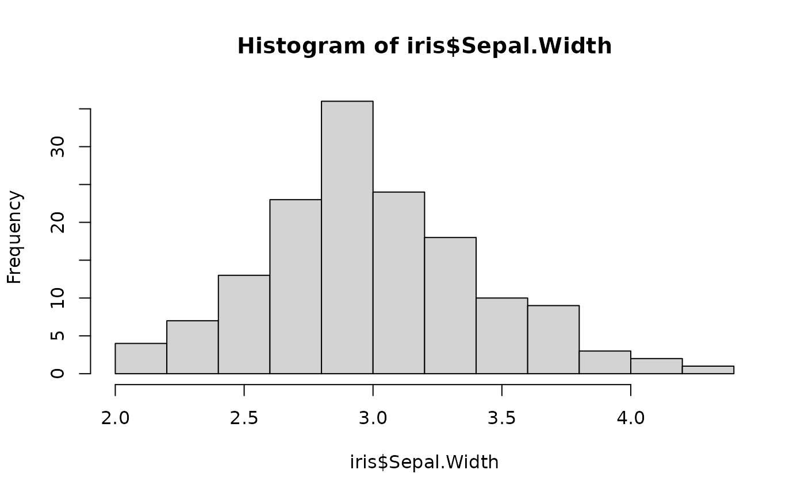

This is a barebone implementation of Friedman's partial dependence
intended for developers. To get more information on partial dependence, see
partial_dependence().
.pd(
object,
v,
data,
grid,
pred_fun = stats::predict,
trafo = NULL,
which_pred = NULL,
w = NULL,
...
)Fitted model.
Variable name in data to calculate partial dependence.
Matrix or data.frame.
Vector or factor of values to calculate partial dependence for.
Prediction function, by default stats::predict.
The function takes three arguments (names irrelevant): object, data, and ....
How should predictions be transformed?
A function or NULL (default). Examples are log (to switch to link scale)
or exp (to switch from link scale to the original scale).
If the predictions are multivariate: which column to pick
(integer or column name). By default NULL (picks last column).
Optional vector with case weights.
Further arguments passed to pred_fun(), e.g., type = "response" in
a glm() or (typically) prob = TRUE in classification models.
Vector of partial dependence values in the same order as grid.
Friedman, Jerome H. 2001, Greedy Function Approximation: A Gradient Boosting Machine. Annals of Statistics 29 (5): 1189-1232. doi:10.1214/aos/1013203451.
fit <- lm(Sepal.Length ~ ., data = iris)
.pd(fit, "Sepal.Width", data = iris, grid = hist(iris$Sepal.Width)$mids)

#> [1] 5.367758 5.467181 5.566605 5.666028 5.765452 5.864875 5.964299 6.063722
#> [9] 6.163145 6.262569 6.361992 6.461416
.pd(fit, "Species", data = iris, grid = levels(iris$Species))
#> [1] 6.425537 5.702287 5.402176